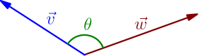
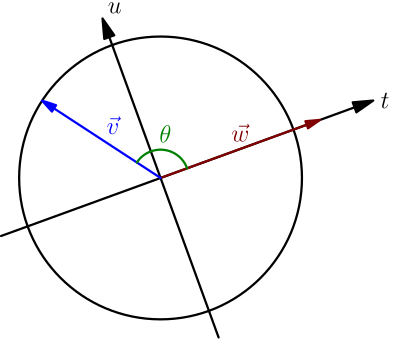

Angle Between Vectors¶
Let $\vec v$ and $\vec w$ be nonzero vectors. By the angle between them, I mean an angle $\theta$ between 0 and 180 degrees like this:

Let's draw a circle of radius $\abs{\vec v}$ around the "beginning" of $\vec v$ and $\vec w$. Let's also draw axises centered on that point so that $\vec w$ goes along one of the axises. These might not be the same as the $x$ and $y$ axises that we use most of the time, because these axises can be rotated depending on how $\vec w$ is rotated, so I'll call them $t$ and $u$ axises instead of $x$ and $y$.

From non-unit-circle trig (TODO), we know that the $t$ and $u$ coordinates of the tip of $\vec v$ are $$ (t,u) = \Bigl( \abs{\vec v} \cos(\theta), \abs{\vec v} \sin (\theta) \Bigr). $$ The $t$ coordinate $\abs{\vec v} \cos(\theta)$ is the projection of $\vec v$ onto $\vec w$ (this also works if it's negative). Recall from the previous page that the dot product $\vec v \cdot \vec w$ is this projection multiplied by $\abs{\vec w}$, the length of the vector being projected onto. With this, we get $$ \vec v \cdot \vec w = ( \text{projection} ) \abs{\vec w} = \abs{\vec v} \cos(\theta) \abs{\vec w}. $$ This equation also holds if one or both of the vectors is $\vec 0$; in that case, both sides of the equation are zero, regardless of how we define the angle between $\vec 0$ and other vectors.
Let $\theta$ be the angle between the vectors $\vec v$ and $\vec w$. Then $\vec v \cdot \vec w = \abs{\vec v} \abs{\vec w} \cos(\theta)$.
This is a different way to think about the dot product. Using this formula, you can think about dot product without doing anything with projections.
With this way to think about the dot product, we get easily some of the results that we derived on the previous page:
- The angle between any vector and the vector itself is zero, so $$ \vec v \cdot \vec v = \abs{\vec v} \abs{\vec v} \underbrace{\cos(0)}_1 = \abs{\vec v}^2. $$
-
Let's check when the dot product is zero:
$$
\begin{align}
\vec v \cdot \vec w &= 0 \\
\abs{\vec v} \abs{\vec w} \cos(\theta) &= 0 \\
\abs{\vec v}=0 \text{ or } \abs{\vec w}=0 & \text{ or } \cos(\theta)=0
\end{align}
$$
We see that there are two ways how the dot product can be zero:
- One of the vectors being dot producted is the zero vector.
- The cosine of the angle between the vectors is zero. 90 degrees is the only angle between 0 and 180 degrees whose cosine is zero, so this means that the angle between the vectors is 90 degrees; that is, the vectors are perpendicular.
Order Doesn't Matter¶
Let $\theta$ be the angle between two vectors $\vec v$ and $\vec w$. It's also the angle between $\vec w$ and $\vec v$; the angle doesn't depend on which vector is which. Using this along with the formula we derived above, we get $$ \vec v \cdot \vec w = \abs{\vec v} \abs{\vec w} \cos(\theta) = \abs{\vec w} \abs{\vec v} \cos(\theta) = \vec w \cdot \vec v. $$ It's fine to swap the vector lengths in the middle, because they are numbers, and we know that the order doesn't matter when multiplying numbers.
For all vectors $\vec v$ and $\vec w$, we have $\vec v \cdot \vec w = \vec w \cdot \vec v$.
Going back to projections, it's not at all clear that projecting one vector onto the other and multiplying by the length of the vector being projected onto (that is, calculating dot product) doesn't depend on which vector is which, even though it was quite easy to see from the $\cos(\theta)$ formula.